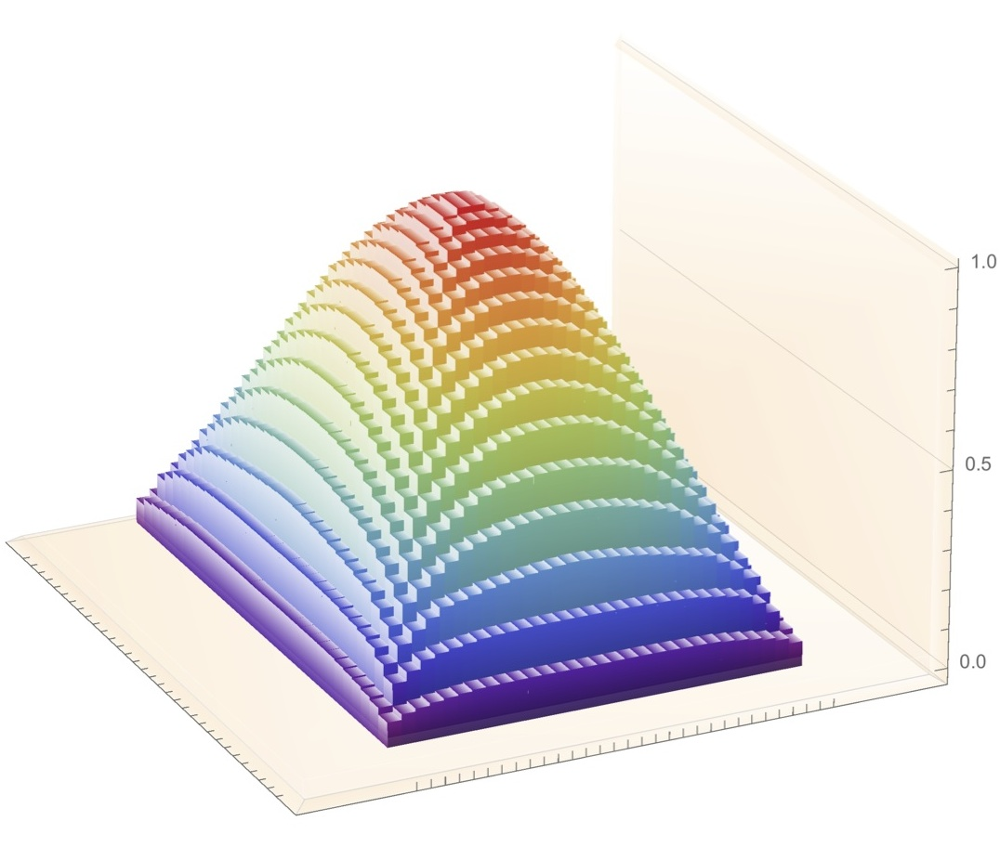
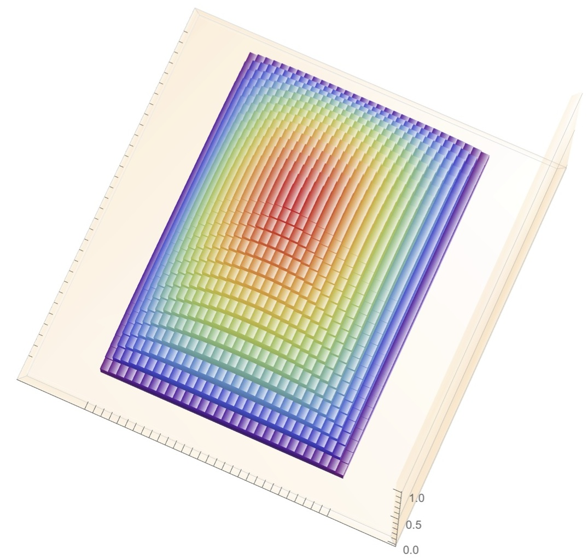
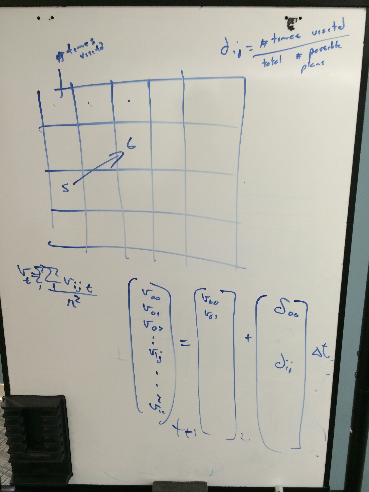
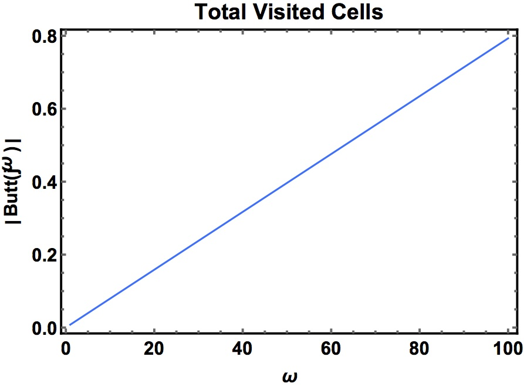

01/12/2015
Below is the likelihood of visiting any particular cell from any other starting point ($30 \times 30$ size). In this case, there are $900$ cells, so the total combination of start and end is calculated by $900 \times 900$. However, we do not account for the case where start and end are at the same point, so the corrected total number of combinations is $900 \times 900 - 900 = 809100$:
 According to the discussion last time, the likelihood of each cell being visited at each time step $v_{ij}^{t+1}$ is from the previous step $v_{ij}^{t}$ adding to the time step $\Delta t$ times the likelihood of each cell being chosen $\delta_{ij}$, where $\delta_{ij}$ is # of times visited divided by total # possible plans:
Using the prior data, the final result is shown as below:
Which makes sense since the update matrix is linear.
I don't think the update step or "# visited cell fration" is correct since we are saying that at every time step each cell is more likely to be visited, but we are merely adding up the likelihood and call it the "# visited cell" fraction.